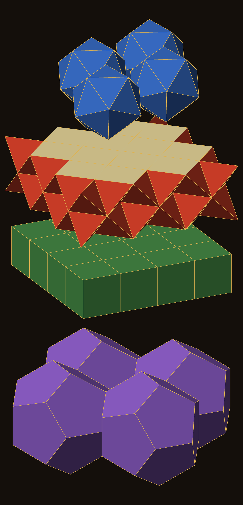
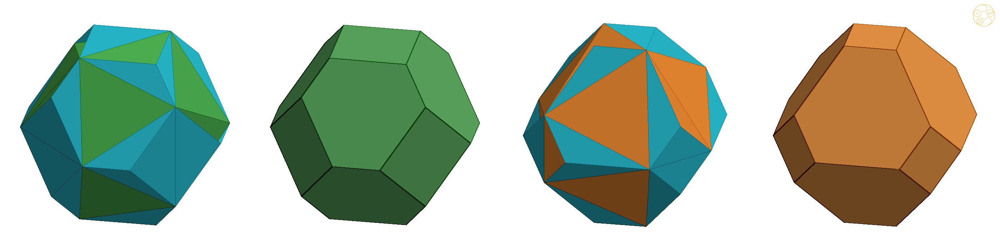
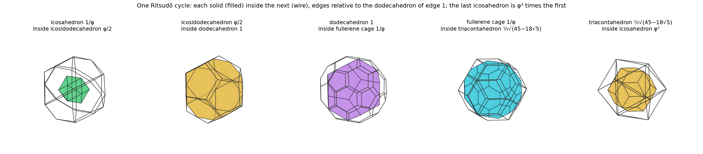
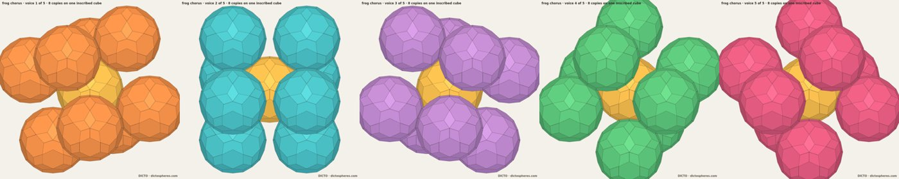
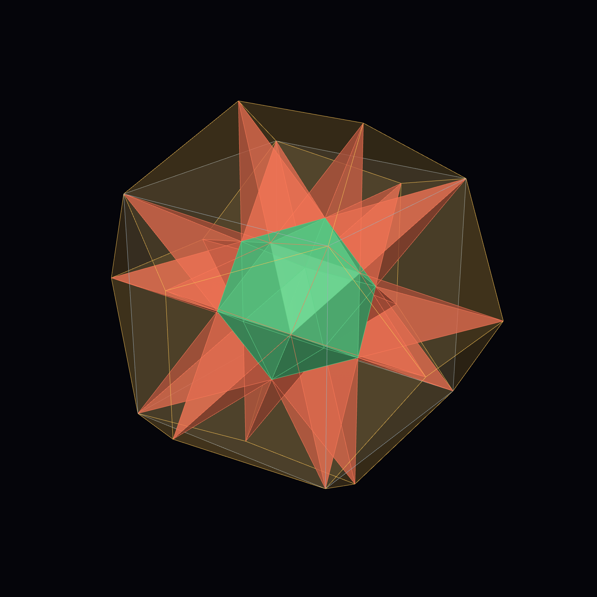
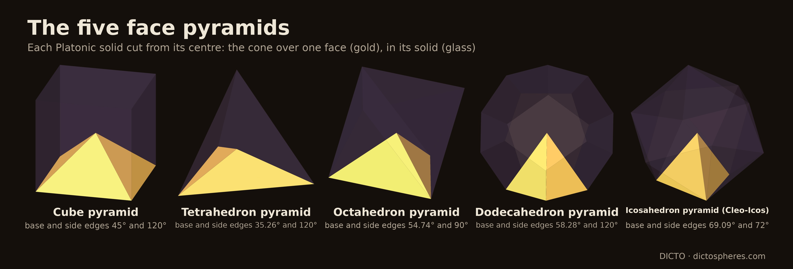
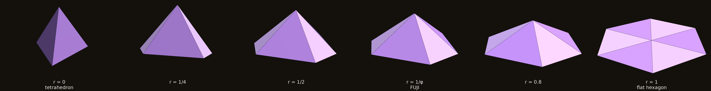

To see a World in a Grain of Sand And a Heaven in a Wild Flower, Hold Infinity in the palm of your hand And Eternity in an hour.
William Blake, Auguries of Innocence
The papers, apps and data of this work are free to use; every one is open access, under the licence CC BY-SA 4.0, free to read, share and build on.
Quanta of Space
The Five Orders of Space · Book One, Volume I
A Manifesto
The geometric works of DICTO
DICTO
artist, Osaka, Japan · contact@dictospheres.com · https://dictospheres.com
All works, findings and names are DICTO's. Computation, proofs, verification and drafting with Claude (Anthropic).
Licence CC BY-SA 4.0
Book · Volume I · Version 3.0 · 20 November 2026 (Version 2.2: 7 November 2026) · DICTO DOI: 10.5281/zenodo.23754454
DRAFT Version 3.0 for DICTO's read, not published (20 November 2026); delete this box at publication. Built from the Version 2.3 draft by the approved outline (outline-v3.md) and DICTO's decisions of 20 November. Structure. (1) The six chapters (Atoms, Bonds, Shells, Cycles, Stacking, Four dimensions) are replaced by five parts in series order: Part One · The cube order (green), Part Two · The icosahedron order (blue), Part Three · The tetrahedron order (red), Part Four · The octahedron order (yellow), Part Five · The dodecahedron order (violet); inside each part the books in number order, inside each book its works in paper number order; each part opens with its principle and ends with a table of its works and their home books. (2) Each entry cut from about two pages to three to five lines ending “Developed in Book N, Title” (or “Shown in”, see below) with the book's DICTO DOI; cut from every entry: “If you held it”, “Where it started”, “What it adds”, the “Data: Volume II, A.n” lines, the per-entry credit lines and the paper DOIs (kept only for #112 and #113, where a fact rests on them, and for the five works with no chapter in any book: #14, #36, #49, #34a, #38a, each one line with “Told in its paper … with its entry in Volume II”, decision 4). (3) Contested homes as the outline proposes; #88 → Book Eight. (4) The cycle page at the front, after the contents, replaces the series page at the back: the eleven books by order, each order with its ring (DICTO's decision of 20 November, see below), with status and DICTO DOIs as verified in the outline, Brief Geometry “in progress”, Musashi and Euclid in one line. (5) “What this work holds”: the seven lines numbered Postulate 1 to 7, words unchanged (candidates of 13 November, lines 1–7). (6) Introduction → Opening: kept the lead, “Atoms and the empty space between them” and “The quanta of modern science”; Plato, Aristotle and Kepler moved to Part Four; “The centre” and “Between the repeating and the never-repeating” moved to Part Three (Book Six); “Six chapters” replaced by “Five orders”; “What the pieces show” replaced by the Ending, “The road through the cycle”, which keeps its four recurring findings and its closing lines. (7) New text: half a page each for Book Seven (from the published Paradigm, Version 1) and Book Eleven (from the agreed plan of A Brief Geometry of Space, said to be in progress); the part principles (the outline's lines, expanded by a sentence); the book introductions (from each book's published description); the Ending. Nothing new is said in DICTO's voice; the one sentence given as DICTO's (Book Eleven) is the plan's “DICTO's sentence for the whole”. Removed to Volume II (to be added to The DICTOnary of Atoms at its next version; the DICTOnary is not edited now), with the one-line pointer “in Volume II, The DICTOnary of Atoms” in Book One: (a) the whole entry “Kaleidohedra by DICTO: the findings published with the open apps” (DICTO DOI 10.5281/zenodo.23173809): “What it is” (the three apps, numbered versions, F-numbers, checks) and the findings without a separate paper, F1 DICTO skewed rhombic dodecahedron (volume φ², linear image of Bilinski's, #50), F5 regular-hexagon elongated dodecahedron (Fedorov 1885, Grünbaum 2010; DICTO's route by the Bain stretch), F10 DICTO Jewel (EKP windows), F11 the stretched dodecahedron, F12 Star Chain Reaction, F15 DICTO Jewel clusters and F16 Sunstar clusters, the DICTONIC world line, and its notes and credit; (b) the whole entry “DICTO Solids: Exact Geometry” (dataset, DICTO DOI 10.5281/zenodo.23606967): “What it is” (69 solids in Version 7) and “What is in it” (exact corners, six filling and four non-filling packings, the inventory of 163 rows with D1–D109, the checker with 1569 checks), with its credit; (c) the Introduction's sentence on the dataset and D-numbers. Other cuts. Figures: 7 of the 45 kept (Euclid–Kepler–Pacioli cell, Aristotle's pyramids, every mix, the golden pair, the Ritsudō cycle, the five voices of the Fibonacci Spine, the FUJI family); the other 38 cut with their text, among them B1 and B2 (keyed pair, DICTONIC world screenshot). The essay “What the web of bonds shows” (#52 study details, Shannon caveats, “a wave–particle moment in geometry”) cut to the #52 entry. Element words: Plato's paragraph now names the four solids without their elements. Kanji: those of Ritsudō and Nenrin (Spheres of Dharma) dropped; both names kept in roman. References for the names: Fuller 1961, Gray 2002, Grünbaum 2010, Johnson 1966 and Zalgaller 1969 dropped (no longer cited); the other seven kept. About the author: “the series page at the back” → “the cycle page at the front”. Decided by DICTO (20 November) on the points flagged in the first 3.0 draft: (i) the series framing keeps DICTO's five-rings metaphor (his own series titles and book framing): the cover is the published series cover, quanta-cover-front-series-v4.png, with “Book One, I · Earth 地 · The Five Orders of Space” (a v5 re-render without the ring word was made and then discarded at his word); the cycle page has a ring column, Earth 地, Water 水, Fire 火, Wind 風 and the Void 空, beside each order, as the old series page had, and its line on Musashi names the rings as the series' metaphor; the five parts' headings and text and all the mathematics stay without element words; the title page keeps “The Five Orders of Space · Book One, Volume I”; (ii) the works whose home book shows them in a mention or a plate rather than a chapter read “Shown in Book N” instead of “Developed in Book N”, and “(shown)” in the tables: #13 and #36 in Book Two, #37 in Book Three, #31a, #35a and #35b in Book Five; (iii) works stay in paper-number order inside each book; (iv) the essay “What the web of bonds shows” and the five dropped references stay cut. Still open: The DICTOnary's “Told in” fields still name the six chapters (order audit of 20 November). At publication this box becomes one line: “Version 3.0 reorganises the book by the five orders of the series The Five Orders of Space: one part for each order, its books in number order and each work in a few lines with its home book; the seven lines of the manifesto become Postulates 1 to 7; a cycle page of the eleven books opens the book, and the road through the cycle to A Brief Geometry of Space ends it.”
Volume II: The DICTOnary of Atoms: Quanta of Space II, the catalogue of all the atoms, the data work by work and the known and rediscovered shapes (Version 1.4, 20 November 2026, DICTO DOI: 10.5281/zenodo.24385357).
For my father, Alan Baker
Contents
The Five Orders of Space: the cycle of eleven books
What this work holds: Postulates 1 to 7
Opening: Quanta of Space
Part One · The cube order (green)Book One, Quanta of Space I and II · Book Two, Space-Fillers and Lattice Moves
Part Two · The icosahedron order (blue)Book Three, DICTONIC Bonds · Book Four, The Golden Cycle · Book Five, Star Cores
Part Three · The tetrahedron order (red)Book Six, HexOct: The Hexagonality Law · Book Seven, The Permutohedron Paradigm
Part Four · The octahedron order (yellow)Book Eight, The Platonic Solids
Part Five · The dodecahedron order (violet)Book Nine, The Golden Ladder · Book Ten, Alicia in Wonderland: The Red & White Queens · Book Eleven, A Brief Geometry of Space
Ending: The road through the cycle
References for the names and credits · About the author
Works are named by their paper numbers on dictospheres.com. In Volume II, The DICTOnary of Atoms: Quanta of Space II: the catalogue of all the atoms, the data work by work, and the known and rediscovered shapes.
The Five Orders of Space
One work by DICTO in eleven books and twelve volumes, in five orders
order
ring
book
status · DICTO DOI
cube, green
Earth 地
One. Quanta of Space I (Postulates) and II, The DICTOnary of Atoms (Definitions)you are here: I
Each order is one of the five Platonic solids, in the colour the Kaleidohedra app gives that solid. The work is built after two models, credited as models: Miyamoto Musashi's Go Rin no Sho, The Book of Five Rings (五輪書, about 1645), whose five rings, Earth, Water, Fire, Wind and the Void, the series takes as its metaphor for the five orders (the ring column above), and Euclid's Elements (about 300 BC), for its build of definitions (Volume II), postulates (this volume) and propositions (Books Two to Eleven).
What this work holds
Postulate 1Space is built from pieces.
Postulate 2Every piece must be exact: a shape you could make and hold, checked to the last corner.
Postulate 3A small kit is enough: a handful of shapes builds shells and spaces without end.
Postulate 4The golden ratio decides when shells close.
Postulate 5Pieces join in bonds, and the web of bonds is as real as the pieces.
Postulate 6Repeating and never-repeating order meet in the pieces.
Postulate 7Everything is open: the apps, the data and the papers, free to use and to build on.
DICTO
Opening
Quanta of Space
Is space smooth all the way down, like water? Or is it built from pieces, the way a wall is built from stones? People have asked this for two and a half thousand years. This book takes the question literally. It looks for exact sets of solid pieces that fit together with no gaps, into shells, into cycles and into the whole of space.
What follows is a family tree of an idea, not a claim about physics. The pieces in this book are shapes you could build and hold. They share a question with the old thinkers and with modern science: what are the smallest pieces of space, and how do they join?
Atoms and the empty space between them
In ancient Greece, Leucippus and Democritus taught that the world is made of tiny pieces that cannot be cut, the atoms, moving through empty space. The atoms differ only in their shape, their arrangement and their position. The Roman poet Lucretius put the teaching into verse: “nothing exists per se except atoms and the void”. So the atoms were pieces. But no one said what shapes they had. Plato gave them shapes, Aristotle asked that they fill space, and Kepler asked how equal units pack; their story opens Part Four.
The quanta of modern science
In 1900 Max Planck found that energy comes in small fixed amounts, quanta. In one modern theory of gravity, called loop quantum gravity, space itself does too. In 1995 Carlo Rovelli and Lee Smolin showed that in this theory area and volume come in separate steps, not smoothly. In 2011 Eugenio Bianchi, Pietro Doná and Simone Speziale showed that each small amount of volume can be read as a little solid with flat faces, fixed by the sizes and directions of its faces. Space becomes a network of such solids, joined face to face. The phrase “quanta of space” itself comes from this theory (Rovelli and Upadhya, 1998).
There is an honest difference. In that theory two neighbouring pieces share a face of the same area, but in general not of the same shape (Freidel and Speziale, 2010). Their pieces need not fit. Our pieces always fit exactly, corner to corner. Other approaches, such as causal sets, build space and time from points rather than from solids.
So this book makes no claim about physics. It shares the question and the form: what are the smallest exact pieces from which space can be built, and how do they join?
Five orders
DICTO's answer is given here as seven postulates, and the works that bear them out fall into five orders, one for each of the five Platonic solids of his name, taken in the order of the series: the cube, the icosahedron, the tetrahedron, the octahedron and the dodecahedron. Each order is a part of this book. Each part states its principle in a few lines, then introduces the books of that order in number order, with the works each book develops, three to five lines to a work, and a table of its works at the end. In the cube order pieces fill space. In the icosahedron order they join in bonds and close in golden shells and cycles. In the tetrahedron order every close packing comes down to a finite catalogue of pieces that change only by swapping. In the octahedron order the five solids of the old schools are taken apart. In the dodecahedron order the same pieces reach beyond three dimensions, and come back. The book ends on the road through the cycle to its last book, A Brief Geometry of Space.
Sources for the opening: Lucretius, On the Nature of Things (tr. W. E. Leonard); C. Rovelli, L. Smolin, Nucl. Phys. B 442 (1995) 593; L. Freidel, S. Speziale, Phys. Rev. D 82 (2010) 084040; E. Bianchi, P. Doná, S. Speziale, Phys. Rev. D 83 (2011) 044035; S. Surya, Living Rev. Relativ. 22 (2019) 5; C. Rovelli, P. Upadhya, Loop quantum gravity and quanta of space: a primer, arXiv:gr-qc/9806079 (1998). Rewritten from the essay Quanta of Space in DICTO: Collected Geometric Works (DICTO DOI: 10.5281/zenodo.23345699). Licence CC BY-SA 4.0.
Part One
Part One · The cube order (green)
Space is built from exact pieces: few fill it alone, more fill it together, some are held. The cube is the one Platonic solid that fills space on its own; its order asks which pieces fill space, and how.
Book One. Quanta of Space I and II
This volume gives the postulates; Volume II gives the definitions.
The catalogue of all the atoms is a book of its own: Volume II, The DICTOnary of Atoms. It lists every named shape of the work, one quantum of space each: DICTO's 193 numbered shapes, D1 to D193 (192 new and one known section, D85), his 50 new clusters, structures and networks, his two families of fair dice, the 149 Aequi and the 1083 Seraphim (#112, Fair Dice — The Aequi, DICTO DOI 10.5281/zenodo.24383314), and the 37 known and rediscovered shapes the work builds with, each with its picture, data and source. It also holds the data, work by work. The findings of the Kaleidohedra app that have no paper of their own, and the dataset DICTO Solids: Exact Geometry, are in Volume II, The DICTOnary of Atoms. Volume II: DICTO DOI 10.5281/zenodo.24385357.
Book Two. Space-Fillers and Lattice Moves
Which solids fill space alone, which fill it only together, and which hold by shape alone.
#13The DICTO Dodeca-13. Twelve dodecahedra round one touch only along the edges of the centre and leave thin gaps of about ten degrees where three meet. Thirty wedges and twenty needles fill the gaps exactly: 63 pieces in one closed solid, which comes apart into the bare centre and twelve finned units. Its best stacking by sliding alone is body-centred cubic. Shown in Book Two, Space-Fillers and Lattice Moves (DICTO DOI 10.5281/zenodo.24221379).
#14The DICTO-Star. An icosidodecahedron, 12 dodecahedra and 20 cut icosahedra close exactly round every edge, with no filler piece; two stars can share a dodecahedron, but no lattice of stars fits. Told in its paper (#14, DICTO DOI 10.5281/zenodo.23284213), with its entry in Volume II.
#17Kagome Hulls. Clusters that share corners follow one rule: a hull with a given number of corners sits on a network where each cluster has that many neighbours, four for the diamond network, six for the simple cubic, eight for the body-centred cubic, twelve for the face-centred cubic. The Dodeca-13 is the exception: twelve corners, at most three neighbours, never a lattice, where icosahedral symmetry meets periodic space. Developed in Book Two, Space-Fillers and Lattice Moves (DICTO DOI 10.5281/zenodo.24221379).
#18The DICTO Hexa. Eight DICTO Jewels on a two-by-two-by-two block, passing through each other inside, make one cube with 24 diamond windows. The space between Hexas is one solid, which DICTO named the Hexa-Key, and Hexas and Hexa-Keys fill space like a checkerboard, five parts to three by volume, as Jewels and stellas do one level down. Developed in Book Two, Space-Fillers and Lattice Moves (DICTO DOI 10.5281/zenodo.24221379).
#25DICTO Spheroid-13 RD. A rhombic dodecahedron with its twelve face neighbours fills space by sliding alone, in exactly 8 ways, all one arrangement turned. Rounded, with every face flat and every piece convex, the block is nearly as round as one rhombic dodecahedron; its centres are islands that would fill space on their own, so the block holds two space-fillings, one inside the other. Developed in Book Two, Space-Fillers and Lattice Moves (DICTO DOI 10.5281/zenodo.24221379).
#26DICTO ATOM-13×13. Thirteen clusters of twelve round one, side by side, with 24 kits of 13 to 213 pieces that fill between them, every one checked piece by piece. Two golden clusters, the Lotus seed and the Bodhi seed, close exactly into larger copies of themselves, and every periodic block fills space by sliding alone: seven shapes wearing one tiling. Developed in Book Two, Space-Fillers and Lattice Moves (DICTO DOI 10.5281/zenodo.24221379).
#36Golden Bodhi Pyrochlore. The gap between packed DICTO Ogdoecontahedra is filled by one piece, DICTO's Bull-horns OG adaptor, so the whole packing is built from two shapes. Shown in Book Two, Space-Fillers and Lattice Moves (DICTO DOI 10.5281/zenodo.24221379); told in its paper (#36, DICTO DOI 10.5281/zenodo.23451210), with its entry in Volume II.
#41The DICTO Jewel. Euclid's dodecahedron, carved by the stella octangulas of its six neighbouring cells, keeps the whole cube and twelve thick Penrose rhombi as windows. Jewels on the white cubes and stellas on the black fill space exactly, three parts to one, in the pattern of table salt. DICTO's clusters, the Jewel-Tetra, Jewel-Octa and Jewel-Rhombi, become single solids that fill space with loose stars, and the Hexa is proved here. Developed in Book Two, Space-Fillers and Lattice Moves (DICTO DOI 10.5281/zenodo.24221379).
#42The DICTO Sunstar. The Jewel's twin: regular dodecahedra on alternate cubes and Dogstars* between them fill space. Each Dogstar holds a whole Sunstar, smaller by a golden factor, which holds the next, for ever: DICTO's Star Chain Reaction. The Sunstar clusters fill space in exactly the ways the Jewel clusters do. Developed in Book Two, Space-Fillers and Lattice Moves (DICTO DOI 10.5281/zenodo.24221379).
* Dodecahedron stellation 8 (Hart, 1996). Rediscovered by DICTO as the Dogstar.
#47Every Mix of the Platonic Solids Fills Space. Choose any of the five Platonic solids, one, several or all, at one edge length: they pack with no gaps using one fixed kit of seven helper pieces, by a layer cake of slabs with flat tops and bottoms. The cube alone, the tetrahedron with the octahedron, and these three together need no helper; every mix with the dodecahedron or the icosahedron needs one. Developed in Book Two, Space-Fillers and Lattice Moves (DICTO DOI 10.5281/zenodo.24221379).

Figure 1. The mix of all five solids (#47): the slabs stacked from bottom to top, drawn apart. Dodecahedra (violet), cubes (green), the octet of tetrahedra (red) and octahedra (yellow) with half octahedra on its faces (pale gold), and the icosahedra (blue) of the large octet. Left out so the solids show: the Dogstars and boundary pieces, the Admiral Caps and the small pyramids. From the paper's Figure 1.
#49The Polyhedral Stretching Theorem. Slide any solid with equal edges one edge-length in a straight line, in any direction but along one of its own edges, and every edge of the shape it sweeps is one edge-length long: DICTO's stretched solids. Told in its paper (#49, DICTO DOI 10.5281/zenodo.23566671), with its entry in Volume II.
#50One Move Each. Three moves of the Kaleidohedra app, a shear, the equal-edged cell and a stretch, give five classical space-fillers exactly, each at one setting: the Bain rhombic dodecahedron, the regular-hexagon elongated dodecahedron*, the classical elongated dodecahedron, Bilinski's golden dodecahedron and the 60° rhombohedron. A rhombic dodecahedron can be stretched into an elongated dodecahedron that still fills space in exactly three directions. Developed in Book Two, Space-Fillers and Lattice Moves (DICTO DOI 10.5281/zenodo.24221379).
* Fedorov's elongated dodecahedron with regular hexagons (Fedorov, 1885). Rediscovered by DICTO as the regular-hexagon elongated dodecahedron.
The works of Part One
#
title
home
—
The catalogue of all the atoms
Book One, Volume II
13
The DICTO Dodeca-13
Book Two (shown)
14
The DICTO-Star
its paper; Volume II
17
Kagome Hulls
Book Two
18
The DICTO Hexa
Book Two
25
DICTO Spheroid-13 RD
Book Two
26
DICTO ATOM-13×13
Book Two
36
Golden Bodhi Pyrochlore
Book Two (shown); its paper; Volume II
41
The DICTO Jewel
Book Two
42
The DICTO Sunstar
Book Two
47
Every Mix of the Platonic Solids Fills Space
Book Two
49
The Polyhedral Stretching Theorem
its paper; Volume II
50
One Move Each
Book Two
Part Two
Part Two · The icosahedron order (blue)
Pieces join in bonds that hand over along a line; the golden ratio decides when shells close and cycles return; star and core turn into each other. The icosahedron fills no space on its own, so its order follows the pieces that join it to its neighbours and the shells that close round it.
Book Three. DICTONIC Bonds
Pairs of pieces that fill space together, and the web of shared faces between neighbouring pieces.
#37The DICTO Ogdoecontahedron on the Octet Truss. Four families of exact kits put the DICTO Ogdoecontahedron (OG) in the octahedra of the octet: the golden-key octet; the Penrose-core octet, whose middle piece holds three Penrose cores; golden envelopes, which fill 55.73 per cent of space and leave one piece; and one glue piece whose faces are imprints of the OG, so the OG and the glue fill space, two shapes, the OG whole. Shown in Book Three, DICTONIC Bonds (DICTO DOI 10.5281/zenodo.24091643).
#37aThe DICTO Ogdoecontahedron on the Gyrated Octet. Across each layer of the gyrated octet the OG meets its twin, the OG turned 60°. Cut each octahedron into the OG and eight caps, keep the tetrahedra whole, and one kit fills the octet, the gyrated octet and every stacking between. DICTO's cut solids of the golden envelope, the DICTO Belted Triacontahedron (DBT) and the DICTO Octahedrally Truncated Triacontahedron (OTT), fit as well. Developed in Book Three, DICTONIC Bonds (DICTO DOI 10.5281/zenodo.24091643).
#40The DICTO OG Family on Every Stacking. Two short rules: a solid's mirror image across a layer is the same solid turned a sixth of a turn (the twin rule), and a solid that stays inside its own layer fits every stacking, whatever the word (the fit rule). So the OG, the OTT, the OCD Stella and the DBT fit every stacking, the Fibonacci stacking too, where the pieces per cell come out as golden numbers: a crystal periodic in two directions that never repeats in the third. Developed in Book Three, DICTONIC Bonds (DICTO DOI 10.5281/zenodo.24091643).
#48The Golden Split. Cut each AXE* between the icosahedra and the Unborns** on a cubic grid into four pyramids from one inner point, and give each pyramid to the piece it touches. At exactly one point, the golden point, nothing sticks out: the two become truncated octahedra, the Icosaxes*** and the Unborn Axes****, which fill space together. In DICTO's Lotus Jewel network the same cut gives the keyed pair, the Lotus Jewel Axes and the Dodecaxes. Developed in Book Three, DICTONIC Bonds (DICTO DOI 10.5281/zenodo.24091643).
* Mosseri–Sadoc tile t6, scaled by 1/φ (Mosseri and Sadoc, 1982). Rediscovered by DICTO as AXE. ** The pseudoicosahedron (Koca et al., 2015). DICTO's name: Unborn. *** The truncated octahedron x = φ (Koca et al., 2015). DICTO's name: Icosaxes. **** The truncated octahedron x = 1/φ (Koca et al., 2015). DICTO's name: Unborn Axes.

Figure 2. The golden pair (#48). From left: the icosahedron (green) with its 12 AXE pyramids (cyan); the Icosaxes as one solid; the Unborn (orange) with its 12 AXE pyramids; the Unborn Axes as one solid. Each panel at its own scale. Both are truncated octahedra with full octahedral symmetry. From the paper's Figure 1.
#51The Delian Bond. One flat cut slid through the double cones of the octet runs from Kepler's rhombic dodecahedra through the octet to cubes, two convex solids filling space at every position. At exactly one position the two have the same volume: Samson, a cube with four alternate corners cut deep, and the regular octahedron*, one twice the octet's tetrahedron and the other half its octahedron, the Delian problem of doubling in both directions at once. Developed in Book Three, DICTONIC Bonds (DICTO DOI 10.5281/zenodo.24091643).
* Named Delilah in DICTO's books: DICTO named the pair Samson and Delilah, from “Delian”.
—The DICTONIC SOLIDS and BONDS. Papers #48 and #51 together give six solids that fill space in three pairs, which DICTO calls the DICTONIC SOLIDS and the DICTONIC BONDS: the golden bond (the Icosaxes and the Unborn Axes), the keyed bond (the Lotus Jewel Axes and the Dodecaxes) and the Delian bond (Samson and the regular octahedron). A DICTONIC BOND is two solids that cannot fill space alone but fill it together; what is new in each is the bond itself, the cut that makes it and the way the pair fills space. The DICTONIC world of the Kaleidohedra app runs each bond through its family with one slider. Developed in Book Three, DICTONIC Bonds (DICTO DOI 10.5281/zenodo.24091643).
#52The Web of Bonds. Both DICTONIC loops are weighted tilings of one fixed crowd of points, the caesium chloride and fluorite crystal structures, with one weight slid between two kinds, and the web of bonds, one bond per shared face, is their exact dual. The golden bonds hand over gradually; the Delian bonds switch at the octet. The weights read as squared atom sizes, the touching ranges end at Pauling's limits, and real crystals sit on the loops. Developed in Book Three, DICTONIC Bonds (DICTO DOI 10.5281/zenodo.24091643).
#53The Global Web of Bonds. DICTO's idea that the hand-overs recur elsewhere, proved for ten crystal networks and the perovskite: every weight walk exactly, every switch, and the bonds on every stretch. The bond between unlike pieces can never break. Developed in Book Three, DICTONIC Bonds (DICTO DOI 10.5281/zenodo.24091643).
#55David and Goliath. In the A15 structure the weight walk lands exactly, at one weight, on the hull of Jessen's orthogonal icosahedron* (Jessen, 1967) and a tetragonal disphenoid** (classical), two to six per cubic cell, filling space: the classical A15 picture of Frank and Kasper, reached by the global theorem. Developed in Book Three, DICTONIC Bonds (DICTO DOI 10.5281/zenodo.24091643).
* Named Goliath in DICTO's books. ** Named David in DICTO's books.
#56Sonsam and Lahdeli. The web of bonds followed on the twinned, hexagonal octet finds its own equal-volume pair, Sonsam and Lahdeli, the mirror of the Delian bond, then Ian Dury with the 60° rhombohedron and the Blockheads; keys change the pieces, never the web. Names by DICTO. Developed in Book Three, DICTONIC Bonds (DICTO DOI 10.5281/zenodo.24091643).
#58From the Octet to Every Stacking: the Web of Bonds. The series paper that tells papers #40 to #57 as one story, from DICTO's PET-bottle-cap spheres and the Polyhedraverse app to the Rule of Halves. It adds no new result; it is the map of how the octet's bonds hand over from one crystal network to the next. Developed in Book Three, DICTONIC Bonds (DICTO DOI 10.5281/zenodo.24091643).
#59The Icosaxes Hexa: Bloom, Bud and Seed. DICTO's idea of the Hexa's move with icosahedral symmetry, proved exactly: twenty Icosaxes on the corners of a dodecahedron, slid towards the centre, touch as the Icosaxes Bloom with twelve windows, close into the Icosaxes Bud at exactly 1/φ of that distance, and fill into the Icosaxes Seed, one solid, at exactly one third. Developed in Book Three, DICTONIC Bonds (DICTO DOI 10.5281/zenodo.24091643).
Book Four. The Golden Cycle
Icosahedral shells, from the Chain of Karma to the gnomon: every solid exact in numbers a + b√5, every nesting and volume checked with remainder zero.
#22The Chain of Karma. A dodecahedron is a small icosahedron in a shell of 12 pentagonal pyramids, 30 AXE* and 20 CLEO**; DICTO's Lotus seed, a larger icosahedron, is that dodecahedron in a shell of 12 diminished icosahedra, 30 AXE and 20 FUJI. Every icosahedron inside is again whole, so the shells alternate without end, built and checked to 20,497 pieces, the gap pieces whole at every size. Developed in Book Four, The Golden Cycle (DICTO DOI 10.5281/zenodo.24091462).
* Mosseri–Sadoc tile t6, scaled by 1/φ (Mosseri and Sadoc, 1982). Rediscovered by DICTO as AXE. ** Mosseri–Sadoc tile t4, scaled by 1/φ (Mosseri and Sadoc, 1982). Rediscovered by DICTO as CLEO.
#23Spheres of Dharma. Six icosahedral solids nest exactly, each layer filled by a few repeated pieces, 237 pieces in one round, and the outer icosahedron is larger than the inner by a fixed golden factor, so the cycle repeats without end in both directions. The six-shell cycle is called a Ritsudō (rhythm), and its ring-by-ring growth Nenrin (tree rings). It shares its dodecahedron and its two icosahedra with the Lotus seed, and the two can be swapped half by half at every scale. Developed in Book Four, The Golden Cycle (DICTO DOI 10.5281/zenodo.24091462).

Figure 3. One Ritsudō cycle of the Spheres of Dharma (#23) at true relative size: each solid (filled) inside the next (wire frame). The last icosahedron is φ³ times the first. From the paper's Figure 3.
#24The Bodhi Seed. Twelve rhombic triacontahedra round a small one close exactly inside a larger one at golden sizes; of the icosahedral solids tested, only the icosahedron and the triacontahedron close this way. The gap fills exactly with convex pieces in two kits of three types, one of them DICTO's Vajras, Crown Jewels and Diadems, with every angle a multiple of 6°. Developed in Book Four, The Golden Cycle (DICTO DOI 10.5281/zenodo.24091462).
#27Capturing the In-betweens. The stages between the shells, taken as solids of their own: 107 whole-ring stages in one round of the Spheres of Dharma alone. Among them the Dodecahedral Chain, from the icosahedron to the dodecahedron through two classical star solids, and 45 further convex stages; 21 piece types carry DICTO's names, and one, Cleo-low*, is another Mosseri–Sadoc tile. Developed in Book Four, The Golden Cycle (DICTO DOI 10.5281/zenodo.24091462).
* Mosseri–Sadoc tile t3, at half size (Mosseri and Sadoc, 1982). DICTO's name: Cleo-low.
#28The DICTO Truncated-Icosahedral Hecatodihedron. A solid of 102 faces, 12 regular pentagons, 30 rhombi and 60 triangles, found by building one stage of the Spheres of Dharma. It is the joined truncated icosahedron with its 12 five-fold corners cut off flat, and its partner, turned inside out, is the DICTO Ogdoecontahedron. Developed in Book Four, The Golden Cycle (DICTO DOI 10.5281/zenodo.24091462).
#29Theaetetus. Twenty Cleo-Icos* standing inward on the triangles of an icosidodecahedron hold an icosahedron exactly, so it cannot turn or shift. Grown outward with the layers of the Spheres of Dharma, the object closes on the Hecatodihedron in two exact ways, one of them in 102 clean pieces, as many as the solid has faces. Developed in Book Four, The Golden Cycle (DICTO DOI 10.5281/zenodo.24091462).
* The icosahedron face pyramid (classical; Mackay, 1962). Rediscovered by DICTO as the Cleo-Icos.
#31The DICTO Ogdoecontahedron. A solid of eighty faces, found by turning a set of nested shells inside out: the pentakis dodecahedron with its 20 six-fold corners sliced off flat, leaving 20 regular hexagons and 60 kites. Joined hexagon to hexagon in two diamond networks, copies fill 77.43 per cent of space, more than the densest stack of equal balls. Developed in Book Four, The Golden Cycle (DICTO DOI 10.5281/zenodo.24091462).
#32Inverted Shells. The Spheres of Dharma turned inside out close again on the same factor, φ³, with one kind of piece per layer. Of the four Kepler–Poinsot stars, only the great stellated dodecahedron locks in the large outer gap, at exactly one size. Developed in Book Four, The Golden Cycle (DICTO DOI 10.5281/zenodo.24091462).
#33Double Vision. Both cycles in one space. The size of the sphere about which one cycle is turned inside out is the one free choice; it has two settings, “ends” and “middle”, and no sphere gives both, since moving between them multiplies the size by 3, and 3 is not a power of the golden ratio. Cut by each other, the two cycles make one solid of convex pieces, 536 or 502 pieces per turn. Developed in Book Four, The Golden Cycle (DICTO DOI 10.5281/zenodo.24091462).
#34Progenitors. The Hecatodihedron and the Ogdoecontahedron as twins: on their own they never close on a power of the golden ratio. Put the Ogdoecontahedron into the Spheres of Dharma in the dodecahedron's place and the cycle closes golden again, nine stations, every step nested exactly, holding the cores and hulls of two partner compounds. Developed in Book Four, The Golden Cycle (DICTO DOI 10.5281/zenodo.24091462).
#34aThe DICTO Hecatogdoecontahedron. The Hecatodihedron and the Ogdoecontahedron interlocked exactly into one compound of 182 faces, which is its own partner. Told in its paper (#34a, DICTO DOI 10.5281/zenodo.23430868), with its entry in Volume II.
#35Vajrayana. The dodecahedron returns inside the Cleo star, and 82 pieces of four kinds fill it exactly. The DICTO Metaxyhexecontahedron closes the last loose step of the Spheres of Dharma, and the cycle grows to twelve stations and repeats, with one loose step still open. Developed in Book Four, The Golden Cycle (DICTO DOI 10.5281/zenodo.24091462).
#38Universal PiTet. DICTO's rule: through each corner of a solid put a flat face at right angles to the line from the centre. From the icosidodecahedron it gives the rhombic triacontahedron, the DICTO GTI, the DICTO FPD and the icosidodecahedron again, larger by an exact factor: the DICTO PiTet Proposition, an endless cycle of four solids, each shell filled exactly by one piece per face of the solid inside. Developed in Book Four, The Golden Cycle (DICTO DOI 10.5281/zenodo.24091462).
#38aThe DICTO Kepler–Poinsot–UP Cycle. Kepler's great and small stellated dodecahedra nested in turn for ever, each turn φ³ larger, every shell filled by the pattern of the Cleo star. Told in its paper (#38a, DICTO DOI 10.5281/zenodo.23464021), with its entry in Volume II.
#39The DICTO OG Family. Four steps up and four down from the Ogdoecontahedron give eight new solids, each exact with the full symmetry of the icosahedron. Near the Ogdoecontahedron they nest as shells, each filled by one piece per face of the solid inside; further out both directions break the same way, so the family nests but does not cycle. Developed in Book Four, The Golden Cycle (DICTO DOI 10.5281/zenodo.24091462).
#43DICTO Kyushindo Cores. DICTO's beats, single steps of the PiTet rule, fused in a Fibonacci rhythm into towers round exact cores. The main theorem: any convex solid with the rotations of the icosahedron sits inside 15 − 6√5 (about 1.58) times the skin round the foot points of its faces, a sharp constant, so the golden turned-out tower nests for ever. Developed in Book Four, The Golden Cycle (DICTO DOI 10.5281/zenodo.24091462).
#54One Turn Is a Gnomon. The gnomon of Euclid and Heron, the piece that makes a figure into a larger copy of itself, carried into three dimensions: the whole turn of twelve nested solids is a gnomon, the next icosahedron φ³ larger, and no single step or shorter run is. The step pieces, the Julias and Pimentels, are named by DICTO in tribute to Júlia Pimentel's square method. Developed in Book Four, The Golden Cycle (DICTO DOI 10.5281/zenodo.24091462).
Book Five. Star Cores
Every solid divides into pyramids, one on each face, with their tips at the centre; turned inside out, each becomes a spike and the solid a star, whose tips span a larger solid, the halo, and meet in a core.
#31aThe DICTO OCD Stella. The Ogdoecontahedron's companion, cut along its joints. It packs to 87.12 per cent of space, twelve round a small one fill a larger copy exactly, as in the Bodhi Seed, and with regular octahedra on the second diamond network the crystal fills 96.33 per cent of space. Shown in Book Five, Star Cores (DICTO DOI 10.5281/zenodo.24091436).
#35aThe DICTO Metaxyhexecontahedron. The solid in the last gap of the golden cycle: it touches both sides, the triacontahedron's corners and the centres of the next icosahedron's faces, and each of the two layers it makes is filled by a single kind of piece, 30 and 60 identical pieces. Shown in Book Five, Star Cores (DICTO DOI 10.5281/zenodo.24091436).
#35bThe DICTO Palintriacontahedron. The rhombic triacontahedron turned inside out, the skin round the tips of the icosidodecahedron's pyramids flipped out at full height. It reaches from one turn of the golden cycle into the next. Shown in Book Five, Star Cores (DICTO DOI 10.5281/zenodo.24091436).
#78The Truncated Icosahedron Star (TI Star). The truncated icosahedron's pentagonal and hexagonal pyramids turned outwards as spikes start an exact doubling cycle, and with the spikes at 1/φ of their height an exact golden cycle; its middle is its own polar, and the hull of the tips, DICTO's Star Halo, starts a cycle of its own. Developed in Book Five, Star Cores (DICTO DOI 10.5281/zenodo.24091436).
The works of Part Two
#
title
home
#
title
home
37
OG on the Octet Truss
Three (shown)
28
Hecatodihedron
Four
37a
OG on the Gyrated Octet
Three
29
Theaetetus
Four
40
OG Family on Every Stacking
Three
31
The DICTO Ogdoecontahedron
Four
48
The Golden Split
Three
32
Inverted Shells
Four
51
The Delian Bond
Three
33
Double Vision
Four
—
The DICTONIC SOLIDS and BONDS
Three
34
Progenitors
Four
52
The Web of Bonds
Three
34a
Hecatogdoecontahedron
its paper; Vol. II
53
The Global Web of Bonds
Three
35
Vajrayana
Four
55
David and Goliath
Three
38
Universal PiTet
Four
56
Sonsam and Lahdeli
Three
38a
Kepler–Poinsot–UP Cycle
its paper; Vol. II
58
From the Octet to Every Stacking
Three
39
The DICTO OG Family
Four
59
The Icosaxes Hexa
Three
43
DICTO Kyushindo Cores
Four
22
The Chain of Karma
Four
54
One Turn Is a Gnomon
Four
23
Spheres of Dharma
Four
31a
The DICTO OCD Stella
Five (shown)
24
The Bodhi Seed
Four
35a
Metaxyhexecontahedron
Five (shown)
27
Capturing the In-betweens
Four
35b
Palintriacontahedron
Five (shown)
78
TI Star
Five
Part Three
Part Three · The tetrahedron order (red)
Every close packing is built from a finite catalogue of pieces that change only by swapping; its laws are straight lines in the share of hexagonal layers; the smallest swap, two neighbours changing places, is the unit.
The centre: the quanta of every close packing
Stack oranges in a crate and each new layer sits in the hollows of the one below, in one of two ways. Repeat one choice and the stack is cubic; repeat the other and it is hexagonal; mix them in any order and it is still a perfect packing. Nature uses many of these mixtures, in metals, ice, silicon carbide and the oxides of batteries.
DICTO's Rule of Halves (#57) shows that however the layers are stacked, periodic or not, the space between the balls is shared out into pieces of only finitely many kinds, every one borrowed whole or in half from the two pure stackings. That is a finite catalogue of quanta for every close packing there is: the clearest answer this work gives to the old question. The pieces change only by swapping (the Swap Rule, #61), so every count and every volume is a straight line in one number, the share of hexagonal layers (the Hexagonality Law, #66), and real crystals obey it. And the catalogue closes into just two tiles, one cubic and one hexagonal, that build every stacking in any order: HexOct (#75). The Law gave the pieces; the pieces prove the law.
Between the repeating and the never-repeating
Some patterns repeat, like the tiles of a bathroom floor. Others never repeat, yet are perfectly ordered, like the Penrose tiling. For most of history, order in matter meant repetition, and five-fold symmetry was thought impossible in a crystal. Then in 1982 Dan Shechtman found a metal alloy whose scattering pattern showed sharp five-fold symmetry. These quasicrystals, ordered but never repeating, earned him the Nobel Prize in 2011. Matter has two kinds of order, and the question became how they meet. The pieces of this work sit on that border: in the Fibonacci Spine (#30) and the Fibonacci stacking (#69) repeating pieces build an order that never repeats, and the two HexOct tiles build repeating and never-repeating stackings alike, by the order in which they are laid. One kit, two kinds of order: the pieces themselves are the bridge.
Book Six. HexOct: The Hexagonality Law
DICTO's work on close-packed stackings, from the Rule of Halves to the two tiles HexOct, read within the Window Law.
#30A Fibonacci Spine. Five repeating packings of the DICTO Ogdoecontahedron meet round a five-fold axis. The copies that must be taken out nearest the axis, with the central copy, form exactly the canonical Fibonacci chain, the simplest order that never repeats; checked exactly to radius 10, 2,756 sites and 385 removed. Nothing aperiodic is put in: only five repeating packings and the rule that hard copies may not overlap. Developed in Book Six, HexOct: The Hexagonality Law (DICTO DOI 10.5281/zenodo.24091415).

Figure 4. The five voices of the Fibonacci Spine (#30): on each inscribed cube, eight copies joined face to face on hexagons round a central copy. From the paper's Figure 2.
#57The Rule of Halves. However equal balls are stacked in close-packed layers, every hole's piece is borrowed from the two pure stackings: a tetrahedral hole takes the piece of its nearest layer, an octahedral hole a top half from the layer above and a bottom half from the layer below. So all stackings, periodic or not, are built from one finite catalogue of pieces. Developed in Book Six, HexOct: The Hexagonality Law (DICTO DOI 10.5281/zenodo.24091415).
#60DICTO Janus c/h Pyrochlore. The Rule of Halves carried to the pyrochlore network, the corner-sharing tetrahedra at the middles of the bonds of every diamond-like crystal. Where a cubic layer meets a hexagonal one, a piece is half one and half the other: DICTO named these two-faced pieces the Janus c/h pieces. Developed in Book Six, HexOct: The Hexagonality Law (DICTO DOI 10.5281/zenodo.24091415).
#61The Swap Rule. Squash or stretch the layers of any stacking, and the two mixed pieces always add up to the two pure ones: change happens only by swapping halves. The squashed stackings bring a new tetrahedron, Ganesha, and the rule's border lies exactly at true close packing. Developed in Book Six, HexOct: The Hexagonality Law (DICTO DOI 10.5281/zenodo.24091415).
#64The Swap Rule in Crystals. The two rules taken to rock salt, cadmium iodide, zinc blende and the Laves phases: the Swap Rule holds in all 299 cases where it can be tested. Developed in Book Six, HexOct: The Hexagonality Law (DICTO DOI 10.5281/zenodo.24091415).
#66The Focus. The Hexagonality Law: where a piece is fixed by its two neighbouring layers, the Swap Rule is equivalent to each layer holding exactly its pure stacking's share, so every count and every volume of the pieces, holes, bonds and swaps is a straight line in one number, the share h of hexagonal layers. Developed in Book Six, HexOct: The Hexagonality Law (DICTO DOI 10.5281/zenodo.24091415).
#67Random Stackings and Stacking Faults. However the layers are stacked, even at random, every kind of piece averages exactly its pure share, fixed by h alone, and every stacking fault moves space between the piece kinds in fixed proportions. Developed in Book Six, HexOct: The Hexagonality Law (DICTO DOI 10.5281/zenodo.24091415).
#68Real Polytypes and the Hexagonality Law. In the physicists' layer model a property is a straight line in h exactly when its couplings beyond the nearest layers vanish; silicon carbide lies on the line within its measured precision. Developed in Book Six, HexOct: The Hexagonality Law (DICTO DOI 10.5281/zenodo.24091415).
#69The Fibonacci Stacking. In the Fibonacci stacking the share of hexagonal layers is 1/φ², hexagonal layers never touch, and by the Hexagonality Law every average piece volume is exact in numbers built from the golden ratio: the bridge between the two kinds of order at the level of the pieces. Developed in Book Six, HexOct: The Hexagonality Law (DICTO DOI 10.5281/zenodo.24091415).
#70–#73Real Materials II to V. What chooses a stacking: the stacking entropy of hard spheres and the tilt of pressure (#70); at most 2 − h tetrahedral hydrogen sites per metal atom in hydrides (#71); 2h face-sharing neighbours in hexagonal perovskites and battery cathodes (#72); h/2 eclipsed bonds per atom in ice, diamond and nanowires (#73). Developed in Book Six, HexOct: The Hexagonality Law (DICTO DOI 10.5281/zenodo.24091415).
#74Spin Ice and Kagome Magnets on Every Stacking. On the pyrochlore network of any stacking three quarters of the sites lie in kagome layers, and in the kagome magnets each manganese atom lies on 1 + 3(1 − h) kagome planes. Developed in Book Six, HexOct: The Hexagonality Law (DICTO DOI 10.5281/zenodo.24091415).
#75Two Tiles for Every Stacking: HexOct. The space of every layer is one tile, and there are only two, the c-tile and the h-tile, which DICTO named HexOct: any tile sits on any tile, so every close-packed stacking is a string of two tiles. Keyed, as HexOct-K, the tiles can compute. Developed in Book Six, HexOct: The Hexagonality Law (DICTO DOI 10.5281/zenodo.24091415).
Book Seven. The Permutohedron Paradigm
Every possible order, followed by one move: two neighbouring values changing places.
The smallest swap is the unit of this book. Three bells, rung by swapping neighbours one at a time, draw a hexagon: the orders of three values are the truncated triangle, and the 24 orders of four values, joined by 36 swaps of three kinds, are Kelvin's cell, the one permutohedron that fills space alone. Swaps inside cells are scutoids, cells that change their neighbours from top to bottom: swept, the four-dimensional permutohedron is a scutoid tissue of 26 births, 66 swaps and 26 deaths, counted by the Eulerian numbers, and every simple four-dimensional polytope, swept, is a scutoid tissue counted by its h-vector (#104). The Swap Rule of close packing (#61) appears there one dimension up, its walls as swaps. At the summit stands the Permutohedron Family: slide the walls of the permutohedron without turning them and every edge stays a swap, in one cone of shapes from Kelvin's cell to the associahedron, whose canonical form is a scattering amplitude; in three dimensions the members that fill space by sliding are Fedorov's five parallelohedra. The book returns to the bells: ringers may only swap neighbours, so every extent is a tour of a permutohedron, and on four bells there are exactly 5396 extents. Book Seven, The Permutohedron Paradigm: Every Possible Order (DICTO DOI 10.5281/zenodo.24239020).
The works of Part Three
#
title
home
30
A Fibonacci Spine
Book Six
57
The Rule of Halves
Book Six
60
DICTO Janus c/h Pyrochlore
Book Six
61
The Swap Rule
Book Six
64
The Swap Rule in Crystals
Book Six
66
The Focus
Book Six
67
Random Stackings and Stacking Faults
Book Six
68
Real Polytypes and the Hexagonality Law
Book Six
69
The Fibonacci Stacking
Book Six
70–73
Real Materials II–V
Book Six
74
Spin Ice and Kagome Magnets on Every Stacking
Book Six
75
Two Tiles for Every Stacking: HexOct
Book Six
—
The swap of neighbours, the scutoid tissues and the Permutohedron Family
Book Seven
Sources: D. Shechtman, I. Blech, D. Gratias, J. W. Cahn, Phys. Rev. Lett. 53 (1984) 1951.
Part Four
Part Four · The octahedron order (yellow)
The five solids of the old schools, taken apart with all the work has found.
Plato's kit of pieces
Plato gave the atoms shapes. In his dialogue the Timaeus, the four elements of matter are four regular solids: the icosahedron, the cube, the tetrahedron and the octahedron. All their faces are built from just two kinds of right-angled triangle. The fifth regular solid, the dodecahedron, was used “for the whole”. This was the first kit for building matter: a small set of exact pieces from which everything is put together.
Aristotle's pyramids
Aristotle replied that if atoms are solid, they must fill space with no gaps. He wrote (On the Heavens III.8) that among solids two do this: the pyramid and the cube. He did not say which pyramid. His commentators took it to be the regular tetrahedron, which on its own leaves a small gap, and argued over it for centuries. Read as he wrote it, he was right: many pyramids fill space, and #44 below proves which pyramids cut from the centres of the Platonic solids do.
Kepler's packings
In 1596 Johannes Kepler nested the five regular solids between the spheres of the planets. In 1611, in a small book on the six-cornered snowflake, he explained the snowflake by how equal small units pack together. That became the famous question of how tightly equal balls can be stacked.
Book Eight. The Platonic Solids
The five regular solids inside one another, filling space, and in four dimensions, asking where all five are at home together.
#8The Euclid–Kepler–Pacioli Cell. One repeating cell nests all five Platonic solids exactly on 13 points: the icosahedron inside the octahedron, inside the two tetrahedra, inside the cube, inside the dodecahedron, with Kepler's great stellated dodecahedron round the icosahedron. Each step is classical; what is new is that the whole chain is one repeating cell. Dodecahedra on every other cell give the known densest lattice packing of the dodecahedron. Developed in Book Eight, The Platonic Solids (DICTO DOI 10.5281/zenodo.24241613).

Figure 5. One Euclid–Kepler–Pacioli cell (#8): the cube (grey), Euclid's dodecahedron (gold), Kepler's great stellated dodecahedron (orange) and the icosahedron (green), all on the same 20 + 12 points. From the paper's Figure 1.
#44Aristotle's Pyramid. Exactly three sets of the face pyramids of the Platonic solids fill space: the cube's alone, the tetrahedron's with the octahedron's, and these three together. The dodecahedron's and the icosahedron's can never be used, in any mix; the proof counts the angles round each edge, with a theorem of Conway, Radin and Sadun. The icosahedron's pyramid, the Cleo-Icos*, fills space with DICTO's Antonius instead, two to one in a golden rhombohedron. Developed in Book Eight, The Platonic Solids (DICTO DOI 10.5281/zenodo.24241613).
* The icosahedron face pyramid (classical; Mackay, 1962). Rediscovered by DICTO as the Cleo-Icos.

Figure 6. The five face pyramids (#44, gold), each shown in its solid (glass) with its tip at the solid's centre and the face at the bottom: cube, tetrahedron, octahedron, dodecahedron and icosahedron. From the paper's Figure 1.
#45The Reuleaux Platonic Solids. Balls on the corners of each Platonic solid overlap in a rounded body. The main theorem: each body is never thinner than its solid is wide, its thickness through the middle of a face is an exact number, and a solid and its partner give bodies of equal thickness through their faces. That the line through a face is the thickest direction of all is left as a conjecture, checked to twelve digits over 3,000 directions. Developed in Book Eight, The Platonic Solids (DICTO DOI 10.5281/zenodo.24241613).
#88Every Platonic Solid Has Exactly Two Golden Cuts. Cut every corner of a Platonic solid by the same amount so that each face becomes a golden truncated polygon, and there are exactly two ways for each solid, ten solids in all: the Greater and Lesser Golden Cut solids. At the octahedron they are the Icosaxes* and the Unborn Axes**, the pair that fills space together (#48). Names by DICTO. Developed in Book Eight, The Platonic Solids (DICTO DOI 10.5281/zenodo.24241613).
* The truncated octahedron x = φ (Koca et al., 2015). DICTO's name: Icosaxes. ** The truncated octahedron x = 1/φ (Koca et al., 2015). DICTO's name: Unborn Axes.
The works of Part Four
#
title
home
8
The Euclid–Kepler–Pacioli Cell
Book Eight
44
Aristotle's Pyramid
Book Eight
45
The Reuleaux Platonic Solids
Book Eight
88
Every Platonic Solid Has Exactly Two Golden Cuts
Book Eight
Sources: Plato, Timaeus (tr. B. Jowett); Aristotle, On the Heavens III.8 (tr. J. L. Stocks); J. Kepler, Mysterium Cosmographicum (1596) and Strena seu de nive sexangula (1611).
Part Five
Part Five · The dodecahedron order (violet)
The same pieces reach beyond three dimensions, and come back. The regular solids of four dimensions can be seen only by their shadows and slices, and in them the pieces of the first four orders return.
Book Nine. The Golden Ladder
A ladder whose rungs are dimensions, with something golden on each, from Plato's solids to the eighth dimension.
#20The FUJI Family. Pyramids on truncated triangles: each antiprism picks exactly one member, the octahedron the tetrahedron, the square antiprism a silver member and the pentagonal antiprism FUJI, tied to the golden ratio. A golden rhombohedron cut twice falls into a Cleo-Icos* at each sharp tip and a middle piece, DICTO's Antonius, so Cleo-Icos and Antonius fill space, two to one, face to face. Developed in Book Nine, The Golden Ladder (DICTO DOI 10.5281/zenodo.24379535).
* The icosahedron face pyramid (classical; Mackay, 1962). Rediscovered by DICTO as the Cleo-Icos.

Figure 7. The FUJI family (#20) at one scale, all side edges equal: from the tetrahedron through FUJI to the flat hexagon. Darker faces: the three equilateral triangles; lighter: the three isosceles triangles. From the paper's Figure 2.
#89All Five Golden Pairs Are Slices of Four-Dimensional Solids. The golden cuts of the Platonic solids are slices of the solids of four dimensions: the tesseract, sliced across its longest diagonal, gives the Golden Cut Tetrahedra at heights 1/φ² and 1/φ, and the golden dodecahedra and tetrahedra are slices of the 120-cell as well. The cubes are the proved exception: they live in the rectified tesseract, and DICTO's filling by cut cubes and octahedra, one of Andreini's patterns of 1905, is a slice of the rectified tesseractic honeycomb (Section 7). Developed in Book Nine, The Golden Ladder (DICTO DOI 10.5281/zenodo.24379535).
Book Ten. Alicia in Wonderland: The Red & White Queens
Two regular solids of four dimensions, the 600-cell* and its polar partner the 120-cell** (Schläfli, 1852), seen by their shadows and slices, with the work that led to them. The names are from Lewis Carroll's Through the Looking-Glass (1871); Alicia is Alicia Boole Stott, who published the slices of both in 1900.
* Named the White Queen in DICTO's books. ** Named the Red Queen in DICTO's books.
#19AXE, CLEO and FUJI. DICTO's Lotus seed sets twelve icosahedra round a small one and fills every gap with three kinds of piece, into one large icosahedron of 113 pieces. AXE* and CLEO** are Mosseri–Sadoc tiles; FUJI is new, and cannot be cut into Mosseri–Sadoc tiles of its own size or larger, proved by the angles of its base and by the Dehn invariant, whose theorem is checked by machine in #113, The Dehn Canon (DICTO DOI 10.5281/zenodo.24383552). Developed in Book Ten, Alicia in Wonderland: The Red & White Queens (DICTO DOI 10.5281/zenodo.24383095).
* Mosseri–Sadoc tile t6, scaled by 1/φ (Mosseri and Sadoc, 1982). Rediscovered by DICTO as AXE. ** Mosseri–Sadoc tile t4, scaled by 1/φ (Mosseri and Sadoc, 1982). Rediscovered by DICTO as CLEO.
#62Shadows of the Fourth Dimension. The shadows and slices of the four triangle-faced solids of four dimensions give solids with equal triangular faces: two variants of known ones that join differently, one closing three round an edge, one filling space alone, and four shapes of the 600-cell rebuilt exactly with equal edges, among them Kagemusha. Developed in Book Ten, Alicia in Wonderland: The Red & White Queens (DICTO DOI 10.5281/zenodo.24383095).
#63The White Queen 600-cell. An exact atlas of every slice and shadow of the 600-cell: 62 slice patterns, twelve made only of triangles, each shadow resolved into two exact halves, and round one corner the 600 cells in fifteen shells, each of one kind of piece, round a core of twenty Cleo-Icos*. Developed in Book Ten, Alicia in Wonderland: The Red & White Queens (DICTO DOI 10.5281/zenodo.24383095).
* The icosahedron face pyramid (classical; Mackay, 1962). Rediscovered by DICTO as the Cleo-Icos.
#65The Red Queen 120-cell. The polar of the 600-cell, built exactly from it: 120 dodecahedra in nine layers round one. All five of Aristotle's pyramids are the cores of the regular solids of four dimensions, seen in perspective, in polar pairs, with exactly his proportions. Developed in Book Ten, Alicia in Wonderland: The Red & White Queens (DICTO DOI 10.5281/zenodo.24383095).
#76Between the Queens. Cutting the 600-cell's corners deeper and deeper passes through five uniform solids to the 120-cell, with the bitruncated 600-cell at the midpoint, all built from its own corners, with exact cut positions and an atlas of 1402 slices and their shadows. Developed in Book Ten, Alicia in Wonderland: The Red & White Queens (DICTO DOI 10.5281/zenodo.24383095).
#77Face to Face: A New Law of Aristotle's Pyramids. Every face-to-face tiling of space by the five face pyramids of the Platonic solids is a tiling by whole Platonic solids, each cut from its centre: the cubic tiling, or tetrahedra and octahedra two of each round every edge; the dodecahedron's and the icosahedron's pyramids never take part. Developed in Book Ten, Alicia in Wonderland: The Red & White Queens (DICTO DOI 10.5281/zenodo.24383095).
Book Eleven. A Brief Geometry of Space
In progress: what follows is its agreed plan.
The last book tells DICTO's three aims as one story, in the order a reader meets them: pieces, then crystals, then the quasicrystal at the turn, then laws. It opens with the essay of this book, re-edited as its first chapter. It goes on to the pieces that fill space alone, and asks whether one piece could force the never-repeating kind of order; that question is open. It stacks the pieces into crystals, words in two letters, c and h, under the Hexagonality Law, and follows the Fibonacci stacking, the first never-repeating order made from repeating pieces. DICTO's sentence for the whole: the quasicrystal is the turning point of a line of crystals. It looks at the shadows of higher dimensions and the two Queens, and ends with a question from modern physics: can a shape hand out laws, the way one polytope, the amplituhedron, hands out the rules of particle collisions? Its thread is the swap at every level, from two neighbours changing places to a solid and its polar; a law is claimed at a swap's fixed point only where the swap forces it, and every open question is stated as open. It is written for a general reader, each theorem in words with one picture and its source, and it closes by coming back to Book One and the same pieces. Book Eleven, A Brief Geometry of Space (in progress).
The works of Part Five
#
title
home
20
The FUJI Family
Book Nine
89
All Five Golden Pairs Are Slices of Four-Dimensional Solids (with Section 7, Golden Cuts in Andreini's Fillings)
Book Nine
19
AXE, CLEO and FUJI
Book Ten
62
Shadows of the Fourth Dimension
Book Ten
63
The White Queen 600-cell
Book Ten
65
The Red Queen 120-cell
Book Ten
76
Between the Queens
Book Ten
77
Face to Face: A New Law of Aristotle's Pyramids
Book Ten
—
The three aims as one story
Book Eleven
Ending
The road through the cycle
The road starts here, with the oldest question about space, what are its smallest exact pieces and how do they join, and with seven postulates.
In the cube order the pieces fill space: very few alone, all five Platonic solids together with a small kit of helpers, some held by their shape alone. In the icosahedron order they join in bonds that hand over along a line, and close round a core in golden shells and cycles, star and core turning into each other. In the tetrahedron order every close packing comes down to a finite catalogue of pieces that change only by swapping, every count a straight line in one number, and the smallest swap, two neighbours changing places, becomes the unit of a whole paradigm. In the octahedron order the five solids of the old schools are taken apart: nested in one cell, cut into Aristotle's pyramids, rounded, and each cut golden in exactly two ways. In the dodecahedron order the same pieces reach beyond three dimensions, as slices and shadows of the solids of four dimensions, and come back.
Four things come back again and again. A small kit is enough: a handful of exact shapes builds shells and spaces without limit, and for close packing the kit is finite and complete, down to two tiles. The golden ratio appears wherever five-fold symmetry does, and it decides when shells close; it gives every Platonic solid exactly two golden cuts, and the same golden depths return as slices of the solids of four dimensions. The pieces join the two kinds of order in matter, the repeating and the never-repeating. And the same pieces reach beyond our space: the five pyramids that Aristotle named and his readers argued over are the cores of the regular solids of four dimensions.
The road ends at Book Eleven, A Brief Geometry of Space, which opens with this book's essay and closes on the same pieces: what is proved, what is near, and what is still open.
The ancients guessed that space was made of shaped pieces, and modern physics has come back to the idea. These works build such pieces exactly and test them, and each paper behind this book is checked exactly.
References for the names and credits
The regular names are given with their first makers at first use in each entry; * notes give DICTO's names.
E. S. Fedorov, Elements of the Study of Figures (Начала учения о фигурах), St Petersburg (1885).
G. W. Hart, Tetrahedral stellations of the dodecahedron (1996), https://www.georgehart.com/virtual-polyhedra/stellations-dodecahedron-tetrahedral.html (stellation 8).
B. Jessen, “Orthogonal icosahedra”, Nordisk Matematisk Tidskrift 15 (1967) 90–96.
N. O. Koca, M. Koca, A. Al-Mukhaini, A. Al-Qanobi, Quaternionic representations of the pyritohedral group, related polyhedra and lattices (2015), arXiv:1506.04600.
A. L. Mackay, A dense non-crystallographic packing of equal spheres, Acta Crystallographica 15 (1962) 916–918.
R. Mosseri, J. F. Sadoc, “Two and three dimensional non-periodic networks obtained from self-similar tiling”, in The Structure of Non-Crystalline Materials, Taylor and Francis, London (1982); reprinted in P. J. Steinhardt, S. Ostlund (eds.), The Physics of Quasicrystals, World Scientific (1987) 720–734.
L. Schläfli, Theorie der vielfachen Kontinuität (written 1850–1852), Denkschriften der Schweizerischen Naturforschenden Gesellschaft 38 (1901).
About the author
DICTO is the artist name of (Alan) J. Baker, an artist in Osaka, Japan. His background is architectural sculpture, stonecarving and Buddhist statuary. He trained as an architectural stonecarver at the City and Guilds of London Art School (1998–2001), worked at St James's Palace, and recarved the Roman lettering of the Civil Service Rifles War Memorial at Somerset House, London, for its rededication in 2002. Since 2009 he has worked in Japan in the sculpture and restoration of Buddhist statues, among them a statue at Takaosan Jingo-ji, Kyoto, traditionally attributed to Kōbō Daishi Kūkai.
He builds geometric sculpture from recycled PET bottles with two modular systems of his own, B1NR and DICTOspheres, joined without glue. He holds six Japanese design registrations; five rest on spherical projections of the Platonic solids, the five forms behind his name: Dodecahedron, Icosahedron, Cube, Tetrahedron, Octahedron. His sculptures have been shown in Kyoto at the Kyoto Municipal Museum of Art (Interdependent Origination III, 2025), the Insho Domoto Museum of Fine Arts, the Kyoto Botanical Garden, the Kansho Exhibition and the Kyoto Takasegawa Art Festival.
The geometry behind the sculptures led to the papers gathered in DICTO: Collected Geometric Works, and to the books of The Five Orders of Space, of which Quanta of Space: A Manifesto (this one) and its second volume, The DICTOnary of Atoms: Quanta of Space II, are Book One; the cycle page at the front lists them all. Every paper and book is published openly with its own DICTO DOI at Zenodo. More at https://dictospheres.com.